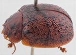
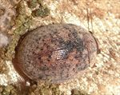
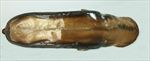
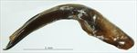
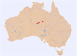

Click on images to enlarge
{kind=link}

Male, Jervois, Northern Territory
![Kings Canyon, Petermann, Northern Territory [Glenda Walter, iNaturalist]](assets/image/Ta84/iNat_250626857_SM.jpg){kind=link}

Kings Canyon, Petermann, Northern Territory [Glenda Walter, iNaturalist]
{kind=link}

Aedeagus, dorsal view (Jervois, Northern Territory)
{kind=link}

Aedeagus, lateral view (Jervois, Northern Territory)
{kind=link}

Distribution (pale-coloured circles indicate records obtained from iNaturalist)
Name
Trachymela interioris (Blackburn)
Reference specimen
2007-116, Jervois, Northern Territory.
Adult Description
Length: ♂ 7.5–9.9 mm (n=15), ♀ 8.0–10.2 mm (n=12).
Colouration:
- Head: frons and clypeus light- to mid-brown; black or dark-brown, if present, confined to fronto-clypeal suture, most commonly near its lateral extremities, labrum straw brown; mandibles brown with black tips; antennomeres 1–2 straw brown, 3–11 concolorous or fractionally darker.
- Pronotum: brown, concolorous with head, a longitudinal black macula on each side of discal area, sometimes with irregular edges, extends from near anterior edge and roughly level with inside edge of eye to about halfway, rarely further, towards posterior edge, a round black macula is always present at centre of each foveal area and usually there is a small, oblique black streak behind it and rear margin.
- Scutellum: brown, concolorous with adjacent area of pronotum, edged in darker brown.
- Elytra: brown, concolorous with pronotum, with small to moderately-sized black wart-like verrucae arranged over the whole surface as 8–9 more or less interrupted longitudinal series, verrucae are widely spaced within the series with varying spacing for different series and sometimes the series are not obvious, a few verrucae may be slightly elongated longitudinally, the verrucae just posterior to antero-median depression align laterally, forming a loose interrupted ridge, elytral suture black around highest point and often also forward to scutellum, punctures concolorous with or fractionally darker than interstices, humeral callus black.
- Venter & Legs: mostly mid-brown, with slightly paler patches sometimes present, most frequently on abdominal ventrite V, legs fractionally paler, inside surface of elytral epipleura brown.
- Cuticular Wax: light-brown, an almost evenly distributed but relatively sparse layer that clearly shows the verrucae and black areas around elytral suture through it.
Morphology:
- Head: punctures small to moderate in size (pd ≈ 1–3× ef), slightly unevenly and densely distributed. Antennae moderately long (AL/BL: ♂ 35–39%, ♀ 34–37%), filiform.
- Pronotum: almost evenly curved transversely over discal region, foveal depression shallow to well developed with a foveal peak, margins noticeably explanate close to edge, discal area smooth to slightly uneven, discal punctures vary from deeply impressed to more shallow, a mix of sizes often present, larger on average than those on head, sometimes evenly and densely distributed, sometimes clusters of finer punctures give an appearance of unevenness, punctures become much coarser on marginal area. Thick front margins join thinner lateral margins in a smoothly rounded right-angle, with lateral margins very gradually curved for more than half their length before rate of curvature increases towards thicker rear margin.
- Scutellum: punctured, with punctures similar in size but shallower than on adjacent region of pronotum, less often unpunctured.
- Elytra: evenly and lightly curved from scutellum for about 2/3 of distance to apex where curvature increases considerably, often suture is almost perpendicular to ventral surface just before apex, becoming noticeably explanate just before apex, greatest height viewed laterally around or a little in front of middle of elytral margin (H/BL = 0.37–0.44); surface evenly curved transversely, antero-median depression relatively well-defined, punctures moderate in size, distinct and relatively evenly distributed between the rows of verrucae, punctures in marginal area similar in size to those on disc, much finer punctures are sparsely scattered over the interstices, relatively small black round or slightly elongated and often quite evenly spaced verrucae form longitudinal series, interrupted by the antero-median depression, VS3 sometimes almost forms a continuous ridge in basal area, verrucae of the different series almost synchronous just behind antero-median depression, sometimes giving the impression of a transverse ridge, elytral suture carinate in posterior third, surface discontinuous under humeral callus, lateral margin almost straight in posterior two-thirds, oblique in anterior third. Vertical extension of epipleura moderate (HCE/PW = 0.33–0.36).
- Venter: prosternal process almost parallel-sided or narrowest anteriorly, open or lightly closed anteriorly, short setae sparsely distributed over prosternal process and mesoventrite, a single seta on anterior and median trochanter; front edge of metaventrite beveled, truncate; inner edge of posterior of epipleurae lacking setae.
Male Genitalia (Aedeagus):
- Dimensions: relatively short (LPE/BL = 28–32%).
- Dorsal view: shaft parallel-sided or fractionally narrowing anteriorly from just in front of basal sulcus to a little behind ostium, then either parallel-sided or fractionally widening to a point a little in front of rear of ostium before narrowing again very gradually and almost smoothly to apex, the rate of narrowing increasing considerably just before apex, dorsal surface lightly sclerotized with dorso-median channel continuing past ostium almost to basal sulcus as a thin channel, short and slightly oblique dorsolateral channels form an ostium that is in the shape of a long oval; spatula moderate in size, tip relatively small and triangular, ostial processes narrow and terminating just before spatula.
- Lateral view: shaft curved near basal sulcus, then ventral surface relatively straight until just in front of rear of ostium, where there is a downward curve towards apex, dorsal surface parallel to ventral from basal sulcus to rear of ostium, then converging with ventral towards apex, tip strongly deflexed.
Immature Stages
Unknown.
Similar species
- Ta12: these species are almost identical in shape and structure, and their aedeagus is very similar also. See discussion in the notes to Ta12.
- Ta77: this Tasmanian species has many similarities to Ta84, including the shape of the aedeagus.
Notes
- Taxonomy: Identified as Trachymela interioris (Blackburn) from Blackburn’s key to the species and his description and type locality.
- Host Associations & Distribution: Found on the river red gum, Eucalyptus camaldulensis, in central Australia.
Copyright © 2026. All rights reserved.